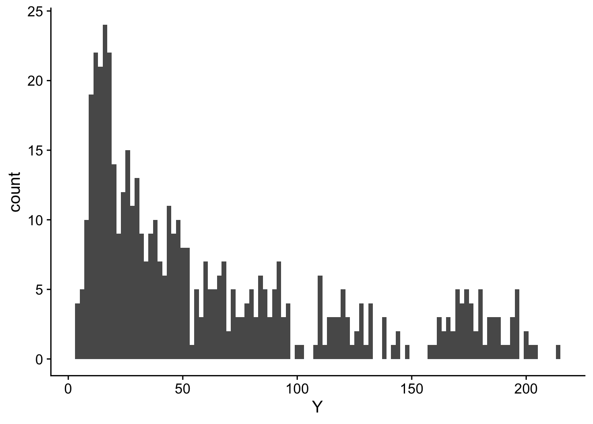

4 Regression
Viele der in diesem Companion behandelten Methoden basiert auf dem Konzept der Schätzung kausaler Effekte mit Regression. Als Regressionsansatz bezeichnet man eine Methode, welche die Beziehungen zwischen Variablen durch einen funktionalen Zusammenhang beschreibt und die Parameter der gewählten funktionalen Form anhand von beobachteten Daten schätzt. Lineare Regression nimmt eine lineare funktionale Form der Beziehung zwischen einer abhängigen Variable (Outcome-Varibale) und erklärenden Variablen (Regressoren) an. Nicht-lineare Regressionsmethoden modellieren die Beziehung etwa durch Polynome höherer Ordnung, exponentielle Funktionen oder andere komplexere Formen. Die Wahl der funktionalen Form hängt von der Natur des datenerzeugenden Prozesses (DGP) und somit stets von der spezifischen Beziehung ab, die untersucht wird.
Regressionsansätze gehören zu den am häufigsten verwendeten Methoden für Kausalanalysen, da so in vielen Forschungsdesigns kausale Effekte identifiziert werden können, indem Backdoors geschlossen werden: Regression kann die durch die Behandlungsvariable verursachte Variation in der Outcome-Variable isolieren, indem für gemeinsame Einflussfaktoren von Behandlungs- und Outcome-Variable kontrolliert wird. In diesem Kapitel erläutern wir Grundlagen der Spezifikation und Schätzung von Regressionsansätzen, die für spätere Kapitel relevant sind. Neben einer Motivation der Schätzung kausaler Effekte mit multipler Regression betrachten wir Modelle für verschiedene Kategorien von Outcome-Variablen und diskutieren deren Implementierung mit R.
4.1 Regression schließt Backdoors: Frish-Waugh-Lovell-Theorem
Das Frisch-Waugh-Lovell-Theorem (FWL) besagt, dass in einer multiplen linearen Regression die geschätzten Koeffizienten für eine Teilmenge der Regressoren numerisch identisch zu Koeffizientenschätzungen aus folgenden Schritten sind
Rechne die Effekte der übrigen Variablen auf (a) die Outcome-Variable und (b) die Teilmenge der erklärenden Variablen mit Regression heraus und
regressiere anschließend die Residuen von Schritt (a) auf die Residuen aus Schritt (b).
In einem multiplen Modell mit zwei Regressoren \(X_1,\ X_2\), \[\begin{align} Y = \beta_0 + \beta_1 X + \beta_2 X_2 + \epsilon \label{eq:fwlfullreg} \end{align}\] kann der Effekt von \(X_1\) auf \(Y\) also mit der Regression \[\begin{align*} \widehat{u}_{Y,X_2} = \beta_1 \widehat{u}_{X_1,X_2} + e \label{eq:fwl2reg} \end{align*}\] geschätzt werden, wobei \(\widehat{u}_{Y,X_2}\) und \(\widehat{u}_{X_1,X_2}\) die Residuen der Regression von \(Y\) auf \(X_2\) und von \(X_1\) auf \(X_2\) sind.
FWL ermöglicht daher eine Vereinfachung der Schätzung komplexer Modelle durch die Zerlegung der Schätzung in Teilschritte.
Für das Verständnis der Schätzung kausaler Effekte mit linearer Regression ist FWL hilfreich, denn es zeigt, wie sowohl die Variation in der Outcome-Variable (\(\widehat{u}_{Y,X_2}\)) als auch die Variation in der Behandlungsvariable (\(\widehat{u}_{X_1,X_2}\)), die jeweils nicht durch Kovariablen (\(X_2\)) verursacht wird, mit multipler Regression isoliert werden kann, sodass Backdoors geschlossen werden.
Wir illustrieren dieses Konzept anhand einer multiplen Regression für die Schnabeltiefe (body_mass) von Pinguinen aus dem Datensatz palmerpenguins::penguins,
\[\begin{align} \textup{body\_mass} = \beta_0 + \beta_1\cdot\textup{bill\_length} + \beta_2\cdot \textup{flipper\_length} + \epsilon,\label{eq:billdepthmodel} \end{align}\] unter der Annahme, dass \(\beta_1\) der interessierende Effekt ist: Die erwartete Änderung des Gewichts eines Pinguins (in Gramm) für eine Änderung der Schnabel-Länge um 1mm.
Vor der Schätzung von Modell \(\eqref{eq:billdepthmodel}\) lesen wir den Datensatz ein und erstellen eine bereinigte Variante penguins_cleaned, analog zur Vorgehensweise in Kapitel 2.2.
Wir schätzen nun Modell \(\eqref{eq:billdepthmodel}\) mit lm() und erhalten eine Zusammenfassung der geschätzen Koeffizienten mit broom::tidy().
Das Ergebnis der Schätzung ist \(\widehat{\beta}_1\approx3.80\). Der nächste Code-Block berechnet die Residuen aus den Regressionen \[\begin{align*} \textup{body\_mass} =&\, \alpha_0 + \alpha_1 \textup{flipper\_length} + u_{\textup{body\_mass},\,\textup{flipper\_length}},\\ \textup{bill\_length} =&\, \delta_0 + \delta_1 \textup{flipper\_length} + u_{\textup{bill\_length},\,\textup{flipper\_length}}, \end{align*}\]
und speichert diese in body_mass_res und bill_length_res.
Der geschätzte Koeffizient aus der Regression der Residuen stimmt mit dem geschätzten Koeffizienten von bill_length aus der großen Regression \(\eqref{eq:billdepthmodel}\) überein.
Wir können den Effekt der Kontrolle für flipper_length visualisieren. Wir plotten hierzu:
Die originalen Datenpunkte für
bill_lengthundbody_mass1 gemeinsam mit der geschätzten Regressionslinie für das Modell \[ \textup{body\_mass} = \beta_0 + \beta_1\textup{bill\_length} + u \] (keine Kontrolle fürflipper_length!)2.Die um
flipper_lengthbereinigten Datenpunkte und die zugehörige geschätzte Regressionslinie.
1 Für eine bessere Lesbarkeit der Grafik zentrieren wir beide Variablen um den jeweiligen Stichprobenmittelwert.
2 Der R-Befehl für diese Regression ist lm(I(body_mass - mean(body_mass)) ~ I(bill_length - mean(bill_length)) - 1, data = penguins_cleaned).
Der grafische Vergleich beider Vorgehensweisen zeigt den Effekt der Kontrolle für flipper_length: Die geschätzte (schwarze) Regressionslinie für die bereinigten Daten hat eine deutlich geringere Steigung als die anhand der ursprünglichen Daten geschätzte (lilane) Linie. Der Effekt von bill_length auf body_mass wird mit der einfachen Regression lm(body_mass ~ bill_length) vermutlich überschätzt, weil es andere Faktoren (wie flipper_length gibt, die mit bill_length und body_mass korrelieren. Kontrollieren für flipper_length in der multiplen Regression lm(body_mass ~ bill_length + flipper_length) schließt die Backdoor durch flipper_length. Die Konsequenz ist eine deutlich geringere Steigung der lilanen Regressionslinie.
4.2 Binäre Outcome-Variable
Eine binäre Variable, auch als dichotome Variable oder Indikator-Variable bezeichnet, ist eine Variable, die nur zwei Ausprägungen annehmen kann. Diese beiden Ausprägungen werden typischerweise durch die Werte 0 und 1 repräsentiert und dienen dazu, zwei verschiedene Zustände oder Kategorien zu unterscheiden. Formal kann eine binäre Variable \(B\) wie folgt definiert werden:
\[\begin{align} B = \begin{cases} 1, & \text{Eigenschaft trifft zu,} \\ 0, & \text{Eigenschaft trifft nicht zu.} \end{cases} \end{align}\]
Eine in späteren Kapiteln dieses Companions als verwendeter binärer Regressor ist der Indikator für die Zuordnung von Beobachtungen in Behandlungs- oder Kontrollgruppe (1 = Behandlungsgruppe, 0 = Kontrollgruppe).
Für viele ökonomische Forschungsfragen ist es hilfreich, eine binäre Outcome-Variable mit Regression zu modellieren. Hierzu gibt es verschiedene Ansätze, die wir nachfolgend zusammenfassen und ihre Anwendung mit R zeigen.
4.2.1 Das lineare Wahrscheinlichkeitsmodell
Das lineare Regressionsmodell
\[Y = \beta_0 + \beta_1 X_{1} + \beta_2 X_{2} + \dots + \beta_k X_{k} + u\] mit einer binären abhängigen Variablen \(Y_i\in\{0,1\}\) wird als lineares Wahrscheinlichkeitsmodell bezeichnet. Wie üblich modellieren wir den Erwartungswert der abhängigen Variable gegeben der Regressoren \(X_1,\dots,X_k\) als lineare Funktion,
\[E(Y\vert X_1,X_2,\dots,X_k) = P(Y=1\vert X_1, X_2,\dots, X_3).\] Da \(Y\) eine binäre Variable ist, gilt hier
\[ P(Y = 1 \vert X_1, X_2, \dots, X_k) = \beta_0 + \beta_1 X_1 + \beta_2 X_2 + \dots + \beta_k X_k.\]
Das lineare Wahrscheinlichkeitsmodell beschreibt also die Wahrscheinlichkeit, dass \(Y=1\) als lineare Funktion der Regressoren: \(\beta_j\) misst die Änderung in der Wahrscheinlichkeit für das Ereignis \(Y_i=1\), unter der Bedingung, dass die anderen \(k-1\) Regressoren konstant gehalten werden. Genau wie bei multipler Regression mit einer kontinuierlichen abhängigen Variablen können die \(\beta_j\) mit der KQ-Methode geschätzt werden.
Aufgrund der Beschränktheit der \(Y_i\) auf \(\{0,1\}\) sind die \(u_i\) heteroskedastisch. Folglich sollten Inferenzstatistiken mit robusten Standardfehlern berechnet werden. Weiterhin ist zu beachten, dass \(R^2\) in den meisten Anwendungen von linearen Wahrscheinlichkeitsmodellen keine hilfreiche Interpretation hat, da das geschätzte Modell die Daten nicht perfekt erklären kann, wenn die abhängige Variable binär, aber die Regressoren kontinuierlich verteilt sind.
Das lineare Wahrscheinlichkeitsmodell hat einen wesentlichen Nachteil: Das Modell nimmt an, dass die bedingte Wahrscheinlichkeitsfunktion linear ist und \(P(Y=1\vert X_1,\dots,X_k)\) nicht auf das für Wahrscheinlichkeiten definierte Intervall \([0,1]\) beschränkt ist. Ein angepasstes Modell hat dann für Regressorwerte, die zu Vorhersagen von \(Y\) jenseits von \([0,1]\) führen keine sinnvolle Interpretation.
Dieser Umstand verlangt nach Regressionsansätzen, die \(P(Y=1)\) durch eine auf \([0,1]\) beschränkte (nicht-lineare) Funktion der Regressoren modellieren. Häufig verwendete Methoden sind Probit- und Logit-Regression.
Ein lineares Wahrscheinlichkeitsmodell kann mit lm() geschätzt werden, wobei die abhängige Variable den Typ numeric oder integer haben muss.
4.2.2 Probit-Regression
Bei der Probit-Regression wird die Standardnormalverteilungsfunktion \(\Phi(\cdot)\) verwendet, um die Regressionsfunktion bei einer binären abhängigen Variable zu modellieren. Wir nehmen an, dass \[\begin{align} E(Y\vert X) = P(Y=1\vert X) = \Phi(\beta_0 + \beta_1 X). \label{eq:probitmodel} \end{align}\]
\(\beta_0 + \beta_1 X\) in \(\eqref{eq:probitmodel}\) ist hier ein Quantil \(z\) der Standardnormalverteilung, \[\begin{align} \Phi(z) = P(Z \leq z) \ , \ Z \sim \mathcal{N}(0,1), \end{align}\] sodass der Koeffizient \(\beta_1\) in \(\eqref{eq:probitmodel}\) die Änderung in \(z\) misst, die mit einer Änderung von einer Einheit in \(X\) verbunden ist. Obwohl der Effekt einer Änderung in \(X\) auf \(z\) linear ist, ist der Zusammenhang zwischen \(z\) und der abhängigen Variable \(Y\) nicht linear, denn \(\Phi(\cdot)\) ist eine nicht-lineare Funktion von \(X\).
Aufgrund der Nicht-Linearität hat der Koeffizient von \(X\) keine einfache Interpretation hinsichtlich des Effekts auf \(Y\). Die Änderung in der Wahrscheinlichkeit, dass \(Y=1\) ist, durch eine Änderung in \(X\) (partieller Effekt) kann berechnet werden als:
\[\begin{align} \frac{\partial\textup{E}(Y\vert X)}{\partial X} = \frac{\partial\textup{P}(Y=1\vert X)}{\partial X} = \frac{\partial\Phi(\beta_0 + \beta_1 X)}{\partial X} = \phi(\beta_0 + \beta_1 X) \beta_1, \end{align}\] wobei \(\phi(\cdot)\) die Dichtefunktion der Standardnormalverteilung ist. In empirischen Anwendungen wird der partielle Effekt häufig als Differenz in geschätzten Wahrscheinlichkeiten angegeben:
- Berechne die geschätzte Wahrscheinlichkeit, dass \(Y=1\) für einen Bezugswert \(X\).
- Berechne die geschätzte Wahrscheinlichkeit, dass \(Y=1\) für \(X + \Delta X\).
- Berechne die Differenz zwischen der geschätzten Wahrscheinlichkeiten.
Wie im linearen Wahrscheinlichkeitsmodell kann das Modell \(\eqref{eq:probitmodel}\) auf eine Probit-Regression mit \(k\) Regressoren \(\boldsymbol{X} := (X_1, \dots, X_k)\) verallgemeinert werden, um das Risiko einer Verzerrung durch ausgelassene Variablen zu mindern. Die Schritte 1 bis 3 für die Berechnung des partiellen Effekts einer Änderung in \(X_j\) erfolgen dann unter der Annahme, dass die übrigen \(k-1\) Regressoren konstant gehalten werden, wobei der partielle Effekt von den jeweiligen Regressorwerten abhängt.
4.2.2.1 Schätzung
Die Likelihood-Funktion für Probit-Regression ist
\[\begin{align*} L(\boldsymbol{\beta}) = \prod_{i=1}^n \Phi(\mathbf{X}_i^\top \boldsymbol{\beta})^{y_i} \left[1 - \Phi(\mathbf{X}_i^\top \boldsymbol{\beta})\right]^{1-y_i} \end{align*}\]
Hierbei ist \(\Phi(\mathbf{X}_i^\top \boldsymbol{\beta})\) die Wahrscheinlichkeit, dass $ Y_i = 1 $ ist und \(1 - \Phi(\mathbf{X}_i^\top \boldsymbol{\beta})\) ist die Wahrscheinlichkeit, dass \(Y_i = 0\) ist.
Die Log-Likelihood-Funktion ergibt sich als
\[\begin{align*} \mathcal{L}(\boldsymbol{\beta}) = \sum_{i=1}^n \left[ y_i \log \Phi(\mathbf{X}_i^\top \boldsymbol{\beta}) + (1 - y_i) \log \left(1 - \Phi(\mathbf{X}_i^\top \boldsymbol{\beta})\right) \right] \end{align*}\]
Um den Maximum-Likelihood-Schätzer \(\widehat{\boldsymbol{\beta}}\) zu finden, muss die Log-Likelihood-Funktion \(\mathcal{L}(\boldsymbol{\beta})\) maximiert werden. In der Praxis erfolgt dies häufig durch numerische Optimierung, da die Log-Likelihood-Funktion der Probit-Regression im Allgemeinen keine geschlossene Form hat damit eine analytische Lösung nicht möglich ist.
Für eine Anwendung in R und einen Vergleich mit dem linearen Wahrscheinlichkeitsmodell erzeugen wir einen Beispieldatensatz simdata für einen datenerzeugenden Prozess (DGP)3 mit einem normalverteilten Regressor \(X\sim N(5,2^2)\) und \[\begin{align*}
P(Y=1\vert X) = \Phi(z), \quad z = -4 + 0.7 X.
\end{align*}\]
3 Siehe Kapitel 5 für Erläuterungen von Simulationsmethoden in R.
Das lineare Wahrscheinlichkeitsmodell schätzen wir wie gewohnt mit lm() und berechnen robuste Standardfehler mit lmtest::coeftest().
Beachte, dass lediglich die Vorzeichen der geschätzten Koeffizienten mit denen der wahren Werten übereinstimmmen. Da das lineare Modell fehlspezifiziert ist, sind die KQ-Schätzer der Koeffizienten hier inkonsistent.
Ein Probit-Modell kann mit glm() geschätzt werden. Hierbei ist formula die Formel für den linearen Prädiktor \(z\) und family eine Verknüpfungsfunktion (Link) für den Zusammenhang von \(z\) und \(Y\). Mit family = binomial(link = "probit") wählen wir die Link-Funktion probit.
Die geschätzten Koeffizienten in der Probit-Regression liegen, wie erwartet, nahe bei Parametern des DGPs.
Um beide Schätzungen gemeinsam zu plotten, erzeugen wir mit predict() Vorhersagen für eine Menge von Werten X im Intervall \([0,11]\). Beachte, dass bei Vorhersagen für das Probit-Modell die gewünschte Transformation der vorherzusagenden Variable über type gewählt werden muss.4 Der Standardfall ist type = "link", d.h. wir erhalten Vorhersagen für den linearen Prädiktor: \(\widehat{z} = \widehat\beta_0 + \widehat{\beta}_1X\). Mit type = "response" werden diese Werte mit der Link-Funktion, hier \(\Phi(\cdot)\) zu vorhergesagten Wahrscheinlichkeiten \(\widehat{P}(Y=1\vert X = x)\) transformiert.
4 Dies gilt für jedes Modell mit einer anderen Link-Funktion als \(f(x) = x\) ist (lineare Regression).
Der nachfolgende Code-Chunk erstellt einen Punkte-Plot mit Jitter-Effekt (position_jitter), wobei die Beobachtungen zufällig leicht vertikal verschoben werden, um Überlappungen zu vermeiden. Zusätzlich zeichnen wir die geschätzten Regressionslinien für mod_lp (LPM) und mod_probit (Probit) sowie die tatsächliche Wahrscheinlichkeitsfunktion \(P(Y=1\vert X)\) ein.
Die Grafik zeigt, dass beide Modelle den positiven Zusammenhang für \(X\) und \(P(Y=1\vert X)\) erfassen. Das lineare Wahrscheinlichkeitsmodell approximiert die tatsächliche nicht-lineare Wahrscheinlichkeitsfunktion nur schlecht und liefert insbesondere in den Rändern der Verteilung von \(X\) (kleine und große Werte) unzulässige Vorhersagen außerhalb des Intervalls \([0,1]\). Die Probit-Spezifikation hingegen erfasst den nicht-linearen Verlauf gut.
4.2.3 Logistische Regression
Bei logistischer Regression wird die logistische Funktion \(\Lambda(\cdot)\) \[\begin{align} \Lambda(z) = \frac{1}{1 + \exp(-z)}, \end{align}\] als Link-Funktion genutzt, um die Wahrscheinlichkeitsfunktion von \(Y\) gegeben \(X\) zu modellieren. Ähnlich wie im Probit-Modell nehmen wir hier an, dass \[\begin{align} E(Y\vert X) = P(Y=1\vert X) = \Lambda(\beta_0 + \beta_1 X). \label{eq:logitmodel} \end{align}\] In diesem Modell entspricht \(\beta_0 + \beta_1 X\) dem sogenannten Logit, dem logarithmierten Verhältnis von \(p = P(Y=1\vert X)\) und \(1 - p = P(Y=0\vert X)\), \[\begin{align*} \textup{Logit(p)} = \log\bigg(\frac{p}{1-p}\bigg) = \beta_0 + \beta_1 X. \end{align*}\] wobei \(\beta_1\) die Veränderung des Logits pro Einheit Änderung im Regressor \(X\) angibt. Logistische Regression basiert also nicht auf der Annahme einer normalen Link-Funktion.
Ähnlich wie im Probit-Fall ist der Einfluss von \(X\) auf den Logit linear, jedoch besteht auch hier eine nicht-lineare Beziehung zwischen dem Logit und der Wahrscheinlichkeit \(P(Y=1\vert X)\), da \(\Lambda(\cdot)\), wie \(\Phi(\cdot)\) im Probit-Modell, eine nicht-lineare Funktion mit dem Wertebereich \([0,1]\) ist.
4.2.4 Schätzung
Ähnlich wie bei Probit-Regressionen können Logit-Modelle mit Maximum-Likelihood geschätzt werden. Die Likelihood-Funktion für Logit-Regression lautet
\[\begin{align} L(\boldsymbol{\beta}) &= \prod_{i=1}^n \left(\frac{1}{1 + \exp(-\mathbf{X}_i^\top \boldsymbol{\beta})}\right)^{y_i} \left(1 - \frac{1}{1 + \exp(-\mathbf{X}_i^\top \boldsymbol{\beta})}\right)^{1-y_i}, \end{align}\]
mit \[\frac{1}{1 + \exp(-\mathbf{X}_i^\top \boldsymbol{\beta})}\] der Wahrscheinlichkeit, dass \(Y_i = 1\). Für das Ereignis \(Y_i = 0\) ist die Wahrscheinlichkeit entsprechend \[1 - \frac{1}{1 + \exp(-\mathbf{X}_i^\top \boldsymbol{\beta})}.\]
Die Log-Likelihood-Funktion lautet
\[\begin{align*} \mathcal{L}(\boldsymbol{\beta}) &= \sum_{i=1}^n \left[ y_i \log \left(\frac{1}{1 + \exp(-\mathbf{X}_i^\top \boldsymbol{\beta})}\right) + (1 - y_i) \log \left(1 - \frac{1}{1 + \exp(-\mathbf{X}_i^\top \boldsymbol{\beta})}\right) \right] \end{align*}\]
und erlaubt die Schätzung von \(\boldsymbol{\beta}\) durch Maximierung mit numerischen Methoden.
Aufgrund dieser Nicht-Linearität lässt sich der Koeffizient \(\beta_1\) ebenso wie im Probit-Modell nicht direkt als einfacher Effekt auf die Wahrscheinlichkeit \(P(Y=1)\) interpretieren. Die Interpretation ist aufgrund der Modellierung des Logits jedoch einfacher als für Probit-Regression:
Angenommen ein Unternehmen möchte die Wahrscheinlichkeit modellieren, dass ein Kunde einen Kredit nicht zurückzahlt (\(P(Y = 1\vert X)\)), basierend auf dem Verhältnis von aktuellem Schuldenstand und Monatseinkommen (\(X\)). Die Schätzung des Logit-Modells ist, dass ein Anstieg von \(X\) um 0.1 (z.B. von 0.1 auf 0.2) den Logit für die Wahrscheinlichkeit eines Kreditausfalls um 0.4 erhöht. Das Logit-Modell besagt dann, dass die Wahrscheinlichkeit der Zahlungsunfähigkeit etwa um den Faktor 1.5 ansteigt, \[\begin{align*} \exp(0.4) \approx 1.50. \end{align*}\]
Um den partiellen Effekt einer Änderung in \(X\) am Punkt \(X\) auf \(P(Y=1)\) zu ermitteln, berechnet man die Ableitung:
\[\begin{align*} \frac{\partial\textup{E}(Y\vert X)}{\partial X} = \frac{\partial\textup{P}(Y=1\vert X)}{\partial X} = \frac{\partial\Lambda(\beta_0 + \beta_1 X)}{\partial X} = \lambda(\beta_0 + \beta_1 X) \beta_1, \end{align*}\] wobei \(\lambda(\cdot)\), ähnlich wie die Dichtefunktion der Normalverteilung im Probit-Modell, die Dichtefunktion der logistischen Verteilung darstellt. Diese ist gegeben durch \[\begin{align*} \lambda(z) = \Lambda(z) \cdot (1 - \Lambda(z)). \end{align*}\]
Für die Schätzung mit R nutzen wir glm() und wählen die logistische Link-Funktion mit family = binomial(link = "logit"). Für die simulierten Daten simdata:
Wir erweitern nun pred um die anhand von predict() für mod_logit geschätzten Wahrscheinlichkeiten von \(Y=1\vert X\) für die Regressorwerte in X.
Anhand der Vorhersagen in pred können wir die im Objekt p gespeicherte Grafik um die geschätzte Regressionsfunktion für das Logit-Modell erweitern.
Die Logit-Regression kann den wahren Zusammenhang gut abbilden und ist praktisch nicht von der Probit-Schätzung unterscheidbar.
4.2.5 Modellgüte
Ähnlich wie bei linearer Regression kann die Anpassung von generalisierten linearen Modellen an die Daten mit Anpassungsmaßen verglichen werden. In generalisierten linearen Modellen für binäre Outcome-Variablen kann hierzu die Deviance verwendet werden. Für eine Schätzung anhand der Beobachtungen \(i=1,\dots,n\) berechnet man die Deviance \(D\) als \[\begin{align*}
D = -2 \sum_{i=1}^{n} \left[ y_i \cdot \log\left(\widehat{P}_i\right) + (1 - y_i) \cdot \log\left(1 - \widehat{P}_i\right) \right].
\end{align*}\] \(D\) quantifiziert die Abweichung eines geschätzten Modells von einem perfekt passenden Modell.5 Eine geringere Deviance deutet darauf hin, dass das Modell die Daten besser erklärt. Eine R-Funktion zur Anwendung für Objekte des Typs glm ist deviance().
5 Im Allgemeinen vergleicht Deviance die Log-Likelihood des geschätzten Modells mit der Log-Likelihood des perfekten Modells.
Die Deviance für das Probit-Modell ist tatsächlich etwas geringer als für das Logit-Modell.
Ähnlich wie \(R^2\) für lineare Regression misst Deviance lediglich die Anpassung des Modells an die beobachteten Daten. Daher eignet sich Deviance nur bedingt als Maß zur Einschätzung der Tauglichkeit eines Modells für Out-of-sample-Vorhersagen. Je nach Ziel der Modellierung kann es hilfreich sein, eine robuste Einschätzung der Vorhersage-Güte unter Berücksichtigung der Modellkomplexität vorzunehmen. Hierfür werden oft Informationskriterien verwendet. Das Akaike-Informationskriterium (AIC) \[\begin{align*}
\text{AIC} = 2k - 2 \log(\widehat{\mathcal{L}})
\end{align*}\] ist ein Maß zur Bewertung der Güte eines Modells unter Berücksichtigung der Modellkomplexität. Das AIC wägt die Anpassung des Modells an die Daten (gemessen durch die maximierte Likelihood-Funktion \(\widehat{\mathcal{L}}\)6) und die Komplexität (gemessen als Funktion der Regressoranzahl \(k\)) gegeneinander ab. Hierbei werden Modelle mit weniger Parametern bevorzugt, wenn sie die Daten ähnlich gut erklären, sodass eine Überanpassung und damit eine schlechte Vorhersage-Fähigkeit vermieden werden. In R können wir das AIC für Modell-Objekte mit AIC() berechnen.
6 \(\widehat{\mathcal{L}}\) meint die Likelihood-Funktion für die geschätzen Koeffizienten.
Auch das AIC zeigt an, dass die Schätzung des Probit-Modells in mod_probit besser geeignet für die Modiellierung von simdata ist als das Logit-Modell mod_logit.
4.2.6 Beispiel: Klassifikation von Palmer-Piniguinen
Anhand der in diesem Kapitel betrachteten Methoden können wir Modelle zur Klassifikation von Pinguinen in palmerpenguins::penguins hinsichtlich ihres Geschlechts konstruieren. Hierfür nutzen wir den bereinigten Datensatz penguins_cleaned und transformieren zunächst die abhängige Variable sex in ein numerisches Format.
Wir schätznen nachfolgend ein lineares Wahrscheinlichkeitsmodell penguins_lp, ein Probit-Modell penguins_probit sowie ein Logit-Modell penguins_logit die jeweils sex anhand der simplen Spezikation des linearen Prädiktors \[z = \beta_0 + \beta_1 \textup{bill\_depth}\] erklären.
Mit modelsummary::modelsummary() können wir die wichtigsten Ergebnisse der Regressionen in einer pubplikationsfähigen Tabelle darstellen. Hierzu übergeben wir dem Argument models eine (benannte) Liste der geschätzten Modelle. Bei Angabe von vcov = "HC1" werden robuste Standardfehler ausgegeben.
Die geschätzten negativen und signifikanten Koeffizienten von \(bill\_depth\) erfassen den Zusammenhang, dass Pinguine mit größeren Schnäbeln tendenziell männlich sind: Je größer \(bill\_depth\), desto geringer die geschätzte Wahrscheinlichkeit, dass ein Pinguin weiblich ist. Ein Vergleich anhand des AIC zeigt, dass das Probit-Modell penguins_probit am besten geeignet ist.
Analog zur Vorgehensweise in Kapitel 4.2.3 können wir die geschätzten Modelle vergleichen, in dem wir geschätzte Wahrscheinlichkeiten \(P(Y=\textup{weiblich}\vert\textup{bill\_depth})\) für eine Menge repräsentativer Werte des Regressors bill_depth berechnen und gemeinsam mit den Beobachtungen plotten.
Die geschätzten Regressionsfunktionen unterscheiden sich für den Bereich beobachteter Werte von \(bill\_depth\) nur wenig. Die Grafik zeigt, dass die Schätzungen mit Probit- und Logit-Ansatz nur wenig Nicht-Linearität aufweisen, sodass eine (leichter interpretierbare) Modellierung mit dem linearen Wahrscheinlichkeitsmodell penguins_lp hier zulässig scheint.
Die Klassifizierung der Pinguine im Datensatz hinsichtlich ihres Geschlechts anhand vorhergesagter Wahrscheinlichkeiten \(\widehat{P}_i\) kann durch Abgleich mit einem Grenzwert erfolgen. Ein Beispiel ist \[\begin{align} \widehat{Y}_i = \begin{cases} \textup{weiblich}, & \widehat{P}_i \geq .5,\\ \textup{männlich}, & \textup{sonst.} \end{cases}\label{eq:pengclass} \end{align}\]
Wir können diesen Ansatz in R implementieren, indem wir zunächst die für den Datensatz angepassten Wahrscheinlichkeiten fitted aus den Modell-Objekten auslesen.
Für die Klassifikation der Pinguine anhand der jeweiligen geschätzten Wahrscheinlichkeiten wenden wir die Regel \(\eqref{eq:pengclass}\) mit across() spaltenweise für die Modelle an und erzeugen neue Spalten mit vorhersagen des Geschlechts. Mit .names = "{.col}_pred" erhalten die neuen Spalten das Suffix _pred.
Mit summarise() berechnen wir nun den Anteil korrekter Vorhersagen.
In diesem Beispiel unterscheiden sich die Vorhersagen der drei Modelle für den Grenzwert 0.5 nicht.
4.3 Modellierung von Zählvariablen mit Poisson-Regression
Die Poisson-Regression ist ein statistisches Modell, das verwendet wird, um Zählvariablen (d.h. Variablen, die diskrete, nicht-negative Werte annehmen) zu modellieren, insbesondere wenn die Zählwerte eine Poisson-Verteilung aufweisen. Dieses Modell wird häufig in Fällen verwendet, in denen die abhängige Variable die Anzahl der Ereignisse in einem bestimmten Zeitraum oder Raum beschreibt, wie z.B. die Anzahl der Verkehrsunfälle in einer Stadt innerhalb eines Monats.
4.3.1 Poisson-Verteilung
Eine Zufallsvariable \(Y\) folgt einer Poisson-Verteilung mit Parameter \(\lambda\), wenn ihre Wahrscheinlichkeitsverteilung gegeben ist durch:
\[\begin{align} P(Y = y) = \frac{\lambda^y e^{-\lambda}}{y!} \quad \text{für} \quad y = 0, 1, 2, \ldots \end{align}\]
Hierbei ist \(\lambda\) sowohl der Mittelwert als auch die Varianz der Verteilung (\(\mathbb{E}[Y] = \text{Var}(Y) = \lambda\)).
ggplot(
data = dat,
mapping = aes(x = Y)
) +
geom_histogram(
mapping = aes(y = after_stat(density)),
binwidth = 1,
color = "white"
) +
geom_line(
data = tibble(
X = 0:13,
Y = dpois(x = X, lambda = 5)
),
mapping = aes(x = X, y = Y),
color = "red"
) +
theme_cowplot()4.3.2 Der Regressionsansatz
In der Poisson-Regression modellieren wir den Erwartungswert der abhängigen Variable \(Y\) als eine Funktion der unabhängigen Variablen \(\mathbf{X} = (X_1, X_2, \ldots, X_k)\). Der Erwartungswert von \(Y\) wird durch den Parameter \(\lambda\) repräsentiert, der wiederum eine Funktion der unabhängigen Variablen ist. Die Beziehung wird typischerweise durch eine logarithmische Verknüpfungsfunktion beschrieben:
\[\begin{align} \log(\lambda_i) = \mathbf{X}_i^\top \boldsymbol{\beta} \end{align}\]
Dies kann auch als
\[\begin{align} \lambda_i = \exp(\mathbf{X}_i^\top \boldsymbol{\beta}) \end{align}\]
geschrieben werden, wobei:
\(\lambda_i\) der Erwartungswert von \(Y\) für Beobachtung \(i\),
\(\mathbf{X}_i\) der Vektor der unabhängigen Variablen für Beobachtung \(i\) und
\(\boldsymbol{\beta}\) der Vektor der Regressionskoeffizienten ist.
4.3.3 Schätzung
Die Parameter \(\boldsymbol{\beta}\) werden durch Maximum-Likelihood-Schätzung (MLE) geschätzt. Die Likelihood-Funktion für \(n\) Beobachtungen ist gegeben durch
\[\begin{align} L(\boldsymbol{\beta}) = \prod_{i=1}^n \frac{\lambda_i^{y_i} e^{-\lambda_i}}{y_i!}. \end{align}\]
Die Log-Likelihood-Funktion ist daher
\[\begin{align} \mathcal{L}(\boldsymbol{\beta}) = \sum_{i=1}^n \left( y_i \log(\lambda_i) - \lambda_i - \log(y_i!). \right) \end{align}\]
Da \(\lambda_i = \exp(\mathbf{X}_i^\top \boldsymbol{\beta})\), wird die Log-Likelihood-Funktion zu
\[\begin{align} \mathcal{L}(\boldsymbol{\beta}) = \sum_{i=1}^n \left( y_i (\mathbf{X}_i^\top \boldsymbol{\beta}) - \exp(\mathbf{X}_i^\top \boldsymbol{\beta}) - \log(y_i!) \right) \end{align}\]
Den Maximum-Likelihood-Schätzer \(\widehat{\boldsymbol{\beta}}\) erhalten wir durch Maximierung der Log-Likelihoodfunktion \(\mathcal{L}(\boldsymbol{\beta})\). Eine R-Implementierung finden wir in stats::glm().
4.3.4 Interpretation der Koeffizienten
Die Koeffizienten \(\boldsymbol{\beta}\) in der Poisson-Regression haben eine log-lineare Beziehung zur Zählvariable. Für einen bestimmten Koeffizienten \(\beta_j\) ist die Interpretation wiefolgt:
Ein Anstieg der unabhängigen Variable \(X_j\) um eine Einheit führt zu einer Änderung des Logarithmus des Erwartungswertes von \(Y\) um \(\beta_j\).
Der Erwartungswert \(\lambda\) ändert sich multiplikativ um \(\exp(\beta_j)\).
Angenommen, wir haben eine unabhängige Variable \(X\) (z.B. die Anzahl der durchgeführten Werbekampagnen) und eine Zählvariable \(Y\) (z.B. die Anzahl der Verkäufe). Das Modell könnte wie folgt aussehen:
\[\begin{align} \log(\lambda) = \beta_0 + \beta_1 X \end{align}\]
Wenn \(\beta_1 = 0.5\), bedeutet dies, dass jede zusätzliche Werbekampagne die erwartete Anzahl der Verkäufe um einen Faktor von \(\exp(0.5) \approx 1.65\) erhöht. Das heißt, die Rate der Verkäufe steigt um 65% für jede zusätzliche Werbekampagne.
# Setze den Zufallszahlengenerator für Reproduzierbarkeit
#set.seed(1234)
# Anzahl der Beobachtungen
n <- 500
# Simuliere die unabhängige Variable X (Anzahl der Werbekampagnen)
X <- sample(1:8, replace = T, size = n)
# Setze die wahren Parameter für das Modell
beta_1 <- 0.4 # Koeffizient für X
# Berechne den Erwartungswert lambda basierend auf dem Modell
lambda <- exp(2 + beta_1 * X)
# Simuliere die abhängige Variable Y (Anzahl der Verkäufe) als Poisson-verteilte Zufallsvariable
Y <- rpois(n, lambda = lambda)
dat <- tibble(X = X, Y = Y)ggplot(
data = dat,
mapping = aes(x = Y)
) +
geom_histogram(binwidth = 2) +
theme_cowplot()
# Poisson-Regression schätzen
model <- glm(
formula = Y ~ X,
family = poisson(link = "log"),
data = dat
)
# Zusammenfassung des gesch. Modells
summary(model)
Call:
glm(formula = Y ~ X, family = poisson(link = "log"), data = dat)
Coefficients:
Estimate Std. Error z value Pr(>|z|)
(Intercept) 1.982492 0.019905 99.6 <2e-16 ***
X 0.401297 0.003062 131.1 <2e-16 ***
---
Signif. codes: 0 '***' 0.001 '**' 0.01 '*' 0.05 '.' 0.1 ' ' 1
(Dispersion parameter for poisson family taken to be 1)
Null deviance: 21831.28 on 499 degrees of freedom
Residual deviance: 520.68 on 498 degrees of freedom
AIC: 3315.6
Number of Fisher Scoring iterations: 4# Vorhersagen
dat$predicted <- predict(model, type = "response")
# Simulierte Daten und Schätzungen
ggplot(
data = dat,
mapping = aes(x = X, y = Y)
) +
geom_point(
mapping = aes(color = "Simulierte Daten"),
alpha = 0.5,
position = position_jitter(width = .1)
) +
geom_line(
aes(y = predicted, color = "Geschätztes Modell")
) +
labs(
x = "Anzahl der Werbekampagnen",
y = "Anzahl der Eisverkäufe"
) +
scale_color_manual(
"",
values = c(
"Simulierte Daten" = "blue",
"Geschätztes Modell" = "red"
)
) +
theme_cowplot() +
theme(legend.position = "top")